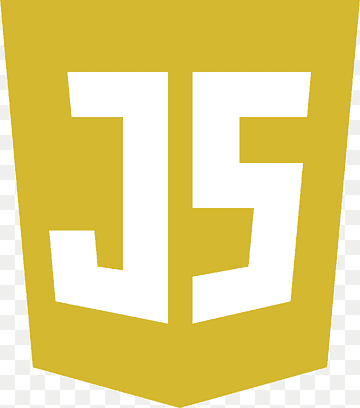
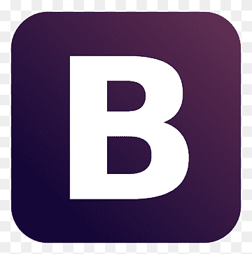
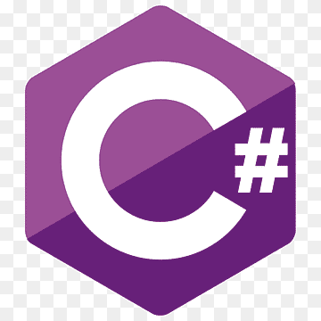
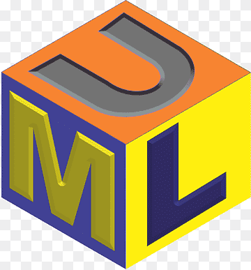

Mon parcours
Rubrique en cours d'écriture...
Développeur Back-End Wordpress/PHP chez Acti (69007 Lyon)Septembre 2023 - Août 2024
Contrat d'apprentissage en parallèle de ma 3ème année de Bachelor
Ingénierie du Web
- Maintenance de différents sites clients (Mise à jour de
versions PHP/plugins Wordpress, améliorations selon les besoins du client...)
Développeur-Testeur chez Tevolys (21000 Dijon)Avril 2022 - Juin 2022
Stage de fin de 2ème année de DUT Informatique
- Gestion de tickets-clients, en interaction directe avec eux
- Mise en place et comparaison de solutions domotiques ("bridges")
3ème année de Bachelor ingénierie du Web (en alternance) | ESGI, 69003 Lyon Septembre 2023 - Août 2024
Cette formation est destinée à me spécialiser en développement web, par l'étude et la mise en pratique de différents langages et frameworks. De plus, l'alternance me permet d'être confronté à la réalité du terrain, pour une transition école/monde du travail moins brutale.
3ème année de Licence Informatique | Université de Bourgogne, 21000 Dijon Septembre 2022 - Décembre 2022
Hésitant encore sur mon choix de spécialisation, je poursuis mon cursus à la fac. Expérience non concluante, leur programme est en retard sur celui du DUT donc on ne progresse pas, et le développement web (absent des matières) me manque énormément. Je décide donc d'arrêter la formation assez tôt dans l'année pour trouver une école qui saura m'accompagner dans ma spécialisation.
DUT Informatique | IUT de Dijon, 21000 Dijon Septembre 2020 - Juin 2022
Cette formation généraliste me fait découvrir et mettre en application les bases de chaque domaine (développement, bases de données, cybersécurité, réseaux...) à travers différents projets. Elle me permet également de connaître ma première expérience professionnelle (stage de 3 mois) qui suscite en moi de la curiosité envers le domaine du développement, mais sans certitudes.
Baccalauréat Scientifique | Lycée Montchapet, 21000 Dijon Septembre 2018 - Juin 2020
Durant mes années de lycée, je choisis par curiosité de prendre l'option "Informatique et
Création Numérique", qui me fait découvrir les bases du Web (HTML, CSS) ainsi que du
développement orienté-objet (Python). Ce choix éveille chez moi un intérêt pour
l'informatique, car j'adhère alors immédiatement à la logique que cela nécéssite et aux
nombreuses possibilités de spécialisations professionnelles.
Suite à la crise du
Covid-19
et du confinement, j'obtiens mon Baccalauréat avec la mention "Très Bien" au contrôle
continu,
preuve de ma régularité et de mon investissement quotidien.
Mes compétences
-
Front
 HTML
HTML CSS
CSS- Vanilla JS
- Bootstrap
-
Back
 PHP
PHP- C#
-
Autres
 Wordpress
Wordpress Git
Git SQL
SQL XML/DTD
XML/DTD- UML